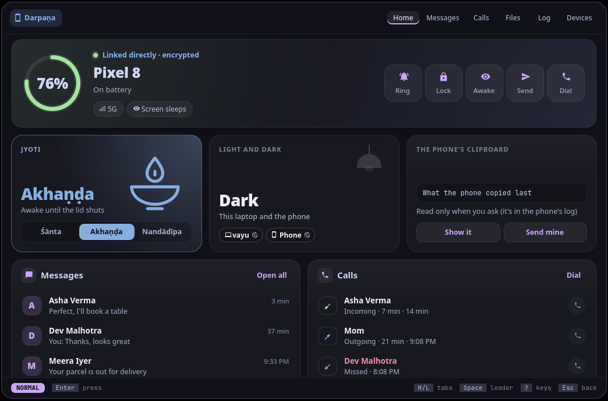
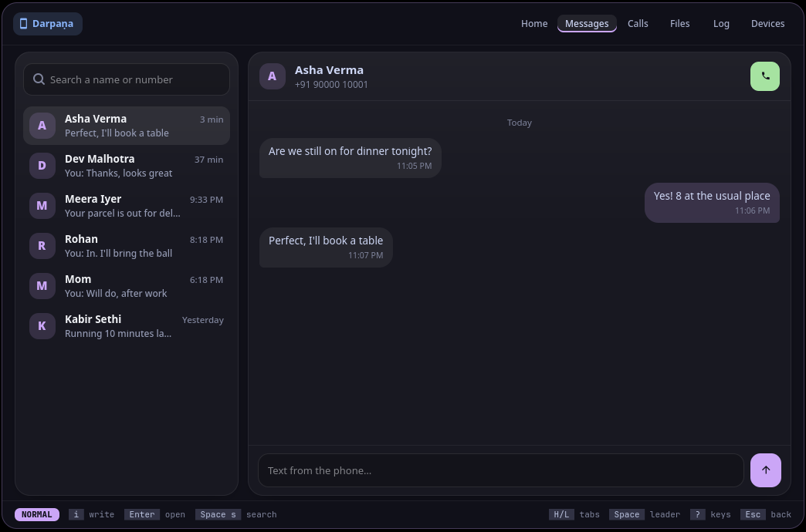
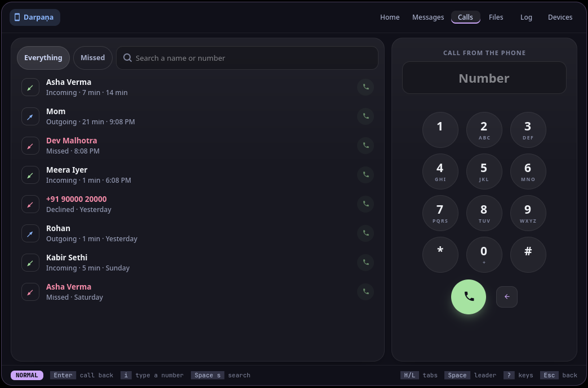
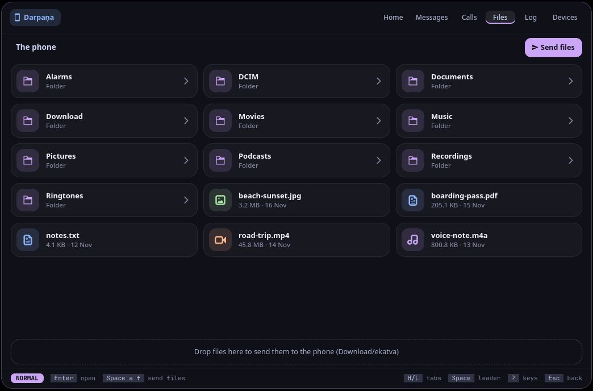

#Darpaṇa




Screenshots use made-up demo data (scripts/demo-service.py).
Darpaṇa (दर्पण) is Sanskrit for "the mirror": your phone, mirrored on the laptop.
It's the laptop's side of ekatva (एकत्व, "oneness": the phone and the laptop as one device), as a Vyom popup. It opens at once: Vyom is already running, and the popup shows what it knew last while fresh state loads.
- Overview: the phone (battery, how it's linked; ring, lock, keep awake, send a file, dial), jyoti, keeping the laptop awake (Śānta, at rest; Akhaṇḍa, the diya; Nandādīpa, the samai, even with the lid closed), light and dark for both (the lamp), the phone's clipboard, the last messages and calls.
- Messages: the phone's conversations, one open beside them, text from the phone.
- Calls: the call history and a dialer; an incoming call shows at the top of every place, with Answer and Decline, and a call in progress with its timer and Hang up.
- Files: the phone's folders; drop files on the popup (or pick them) to send them to its Download/ekatva.
- Log: this laptop's action log (or the copy of the phone's), whether the chain checks out, and Undo.
- Devices: the paired phones, what each may do here (switches grouped by risk), unpairing, and pairing a new phone (a QR code, then four emoji).
It talks to ekatva's own service over its local socket ($XDG_RUNTIME_DIR/ekatva.sock, or $EKATVA_SOCKET), with nothing beyond Python's standard library. Reading the phone's messages, calls and clipboard is written to the phone's log, so they're read when you go to them, not every time the popup opens.
#Install
kosha install darpana # or clone into ~/.local/share/vyom/plugins/darpana
systemctl --user restart vyom
vyom darpana # or: vyom darpana calls | messages | files | log | devices | pairekatva window opens it too (and the pairing notification does).
#Keys
Vyom's vim keys work too: ? and Space ? list every key, Space Space is the palette, q closes, Esc steps back, Space u f is fullscreen, Space r refreshes; on a card j / k move between controls, h / l change the focused one and Enter presses it.
Leader (Space)
| Key | Action |
|---|---|
Space j s | Set jyoti Śānta (the laptop sleeps and locks as usual) |
Space j a | Set jyoti Akhaṇḍa (keep the laptop awake: no lock, no sleep until the lid shuts) |
Space j n | Set jyoti Nandādīpa (keep the laptop awake, even with the lid closed) |
Space p r | Toggle phone ring (find it: full volume until pressed again) |
Space p l | Lock the phone |
Space p k | Toggle the phone's screen staying on |
Space p a | Answer the phone's incoming call |
Space p h | Hang up the phone's call (or decline it) |
Space p d | Dial a number from the phone (the Calls place) |
Space l l | Toggle the laptop's light / dark mode |
Space l p | Toggle the phone's light / dark mode |
Space l b | Switch both to light or dark (the lamp) |
Space g o | Go to home (the phone at a glance) |
Space g m | Go to the phone's messages |
Space g c | Go to the phone's calls |
Space g f | Go to the phone's files |
Space g l | Go to the action log |
Space g d | Go to the paired devices and their permissions |
Space y c | Copy the phone's clipboard to this laptop's |
Space y p | Copy this laptop's clipboard to the phone |
Space a p | Add a phone (shows the connect code: pairs a new phone, reconnects a paired one, any network) |
Space a f | Add a file to the phone (send it to Download/ekatva) |
Space s | Search messages or calls by name or number |
Space r | Reload what this place shows |